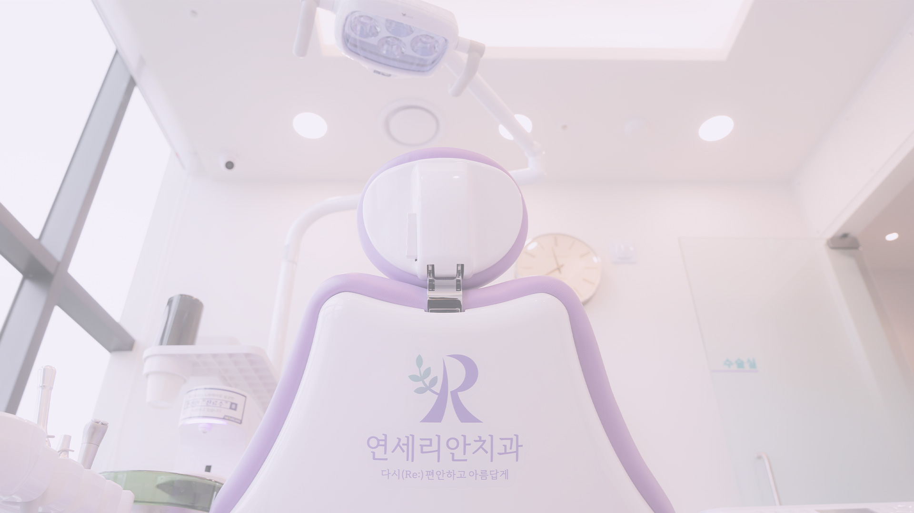
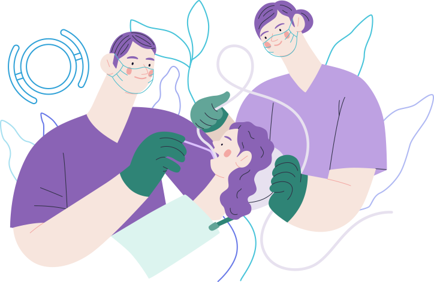

구강검진


가족과 나의 구강 건강을 위해 정기적으로 구강 검진을 받으세요.
직장인, 학생, 영유아 구강검진은 연 1회 국가에서 보장하고 있는 건강 검진의 일환입니다.
치아와 관련된 질병은 초기 증상이 나타나지 않아 무시되기 쉽습니다.
그러나 무시된 질환이 나중에는 더 큰 문제로 이어질 수 있습니다.
우리의 구강에 발생한 문제를 빠르게 확인하고 적절한 대처를 할 수 있도록 정기적인 구강 검진은 필수입니다.